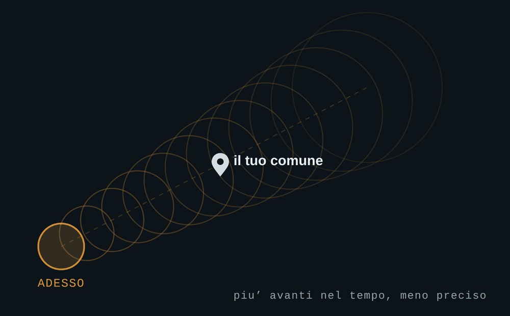

Il radar meteorologico non vede la grandine. Vede un'eco forte a qualche chilometro d'altezza, e da quell'eco qualcuno — un algoritmo, o una persona — deduce due cose: che lassù c'è del ghiaccio, e che arriverà fino a terra senza sciogliersi. Possono sbagliare tutte e due.
Ho scritto un motore che prova a farle da solo. Si chiama Nowcast, gira su un portatile in casa mia, legge i mosaici radar della Protezione Civile e del servizio meteo tedesco, insegue le celle temporalesche e manda una notifica quando una di queste punta verso un comune che hai scelto di sorvegliare.
Quanto preavviso dà davvero
Dieci o quindici minuti. Non di più: chi promette di più sta promettendo un'altra cosa. Il corridoio sulla mappa arriva a settantacinque minuti, ma quella è la lunghezza della proiezione, non il preavviso — più ci si allontana nel tempo più il cerchio si allarga, finché «forse passa di qua» copre mezza provincia. Dieci minuti bastano a mettere la macchina al coperto; non a cambiare i programmi della giornata.
Che cosa guarda, e cosa non può guardare
Guarda la grandine e i downburst, le raffiche che precipitano da un temporale in collasso e stendono gli alberi a raggiera. Non guarda le trombe d'aria: un tornado si riconosce dalla velocità Doppler, che nei dati pubblici non c'è, e senza quella il vortice non si vede affatto.
Se i chicchi sono piccoli, l'avviso non parte
Della grandine il radar dice se c'è, non quanto è grossa: il punteggio del motore nasce dai dBZ, e i dBZ non distinguono la gragnola dal chicco da quattro centimetri. L'unico indizio sulla dimensione è la densità VIL — quanta acqua equivalente è concentrata in quanto spessore di nube — e la soglia che separa i due mondi si aggira intorno ai 3,5 g/m³.
Sotto quel valore Nowcast non manda niente, anche quando tutti gli altri indicatori sono alti: quelli dicono che c'è un temporale e che è vigoroso, ma nessuno di loro risponde alla domanda che il messaggio pone. Non lo apre nemmeno la conferma del servizio meteo tedesco — vedere del ghiaccio non è dire che i chicchi sono grossi. E vale solo dove VIL e altezza dell'eco sono misurati davvero: dove quei numeri non arrivano il motore non trattiene nulla, perché un dato che manca non deve diventare un silenzio.
Funziona? Non lo so ancora, ed è il punto
Il motore ha emesso più di trecento avvisi. Di questi ne ho verificati sei — sei — con un registro che tiene traccia di ognuno: che cosa aveva previsto, e che cosa è successo davvero. Il registro non è aperto al pubblico — è lo strumento con cui taro il motore — e i numeri di questa pagina vengono da lì. Sei verifiche non sono un campione, sono aneddoti: basta cambiare idea su una sola per passare dal cinquanta al settantacinque per cento. Per questo, dove dovrebbe esserci una percentuale di successo, il motore scrive che il campione non basta.
Mi rendo conto che sia il contrario di come si presenta un prodotto. Ma quella soglia di 3,5 g/m³ viene dalla letteratura scientifica e non è mai stata confrontata con un chicco vero caduto in Italia: finché non lo sarà, ritoccarla sarebbe farlo al buio.
Aggiornamento del 12 settembre. Il chicco vero è caduto — cinque centimetri a Forte dei Marmi, su un avviso a densità 3,7. Il confronto: Tre comuni avvisati, uno no.
Installala, anzi: su iPhone è indispensabile, perché le notifiche arrivano soltanto all'app aggiunta alla schermata Home. Ma l'installazione, da sola, non mi dice niente. Quello che mi serve è che tu risponda alla domanda che compare dopo ogni avviso — è arrivata? — soprattutto quando la risposta è no. Un «non è successo niente» vale più di dieci conferme: è l'unico dato che dice quando il motore sta gridando al lupo.
Da qui in poi è la parte tecnica: che cosa misurano davvero i prodotti radar pubblici, e perché «probabilità di grandine» non vuol dire quello che sembra. Non serve per usare l'app; serve per sapere di che cosa ci si sta fidando.
Il radar guarda in alto, la grandine cade in basso
Il mosaico radar nazionale del Dipartimento della Protezione Civile pubblica diversi prodotti, e i due che si incontrano più spesso sono il VMI e la POH. Il VMI è la riflettività massima della colonna: di tutta la verticale sopra un punto, il valore più alto, misurato in decibel Z — i famosi dBZ. La POH è la Probability of Hail, la probabilità che quella cella contenga grandine.
Entrambi descrivono una colonna d'aria, non un pezzo di terreno. Fra il punto in cui il radar vede il ghiaccio e il punto in cui qualcuno lo prende in testa ci sono chilometri di atmosfera, e in quei chilometri succedono cose: il chicco cade, attraversa aria più calda, si scioglie. Un chicco piccolo può sciogliersi del tutto. Un chicco grosso arriva.
Ecco perché la POH non dice quello che il suo nome fa credere. Dice: qui sopra c'è probabilmente della grandine. Non dice: qui sotto probabilmente grandinerà. Sono due affermazioni diverse, e la seconda nessun radar da solo la può fare. Chi costruisce un servizio di allerta questa distinzione la deve dichiarare, perché è esattamente il punto in cui un numero smette di essere una misura e diventa un'interpretazione.
VIL e densità VIL: l'unico indizio sulla taglia
Il VIL — Vertically Integrated Liquid — è la quantità d'acqua equivalente contenuta nell'intera colonna, espressa in chilogrammi per metro quadrato. È un numero utile, ma da solo è muto: una colonna alta e una colonna bassa possono contenere la stessa acqua e comportarsi in modo completamente diverso.
Quello che parla è il rapporto fra il VIL e l'altezza dell'eco — la densità VIL, in grammi per metro cubo. Una colonna che concentra molta acqua equivalente in poco spessore è una colonna piena di ghiaccio compatto: sono i chicchi grossi. Una colonna che distribuisce la stessa massa su dieci chilometri è pioggia intensa, e al massimo gragnola che si scioglie per strada.
In letteratura la soglia che separa i due mondi sta attorno ai 3,5 g/m³. Sotto, la grandine se arriva è piccola; sopra, comincia a essere roba che ammacca le lamiere. È l'unico indicatore, fra quelli disponibili su dati pubblici, che dica qualcosa sulla taglia invece che sulla presenza. Ed è per questo che vale più di un punteggio complessivo: la differenza fra un temporale fastidioso e un temporale costoso non è se grandina, è quanto sono grossi i chicchi.
Una precisazione che sembra pedante e non lo è: la densità VIL si calcola dividendo due grandezze che devono venire dalla stessa rete radar. Prendere il VIL da un mosaico e l'altezza dell'eco da un altro produce un numero che non descrive nessuna colonna reale. Sembra ovvio scritto così; è uno degli errori più facili da commettere quando si mettono insieme fonti diverse, e l'ho commesso.
Il criterio di Waldvogel, e perché spesso non si può usare
Negli anni Settanta il meteorologo svizzero Albert Waldvogel propose un criterio semplice e rimasto in uso: conta quanto la sommità dell'eco radar supera la quota dello zero termico. Se la nube spinge il suo ghiaccio molto al di sopra del livello in cui l'aria comincia a essere sotto zero, vuol dire che le correnti ascensionali sono forti abbastanza da tenere su chicchi pesanti, e quei chicchi cresceranno. La misura è in chilometri sopra lo zero termico, e più sono, peggio è.
È un criterio elegante, e ha un presupposto rigido: quell'altezza dell'eco deve essere misurata, non dedotta. Dove la rete radar non pubblica l'echo top, il criterio di Waldvogel non si applica — punto. Non si sostituisce con una stima, non si prende il dato di un'altra rete: si dichiara che quell'indicatore, lì, non esiste, e si dice apertamente che il giudizio si regge su meno gambe.
Questa è la regola generale, e secondo me è la più importante di tutta la materia: un dato mancante è meglio di un dato preso altrove. Un indicatore assente rende un giudizio più debole, e lo si può scrivere. Un indicatore sbagliato rende un giudizio falso, e non lo si vede.
Downburst non è una tromba d'aria
Qui la confusione è quasi totale, anche nei titoli dei giornali, e riguarda due fenomeni che fanno danni simili per ragioni opposte.
La tromba d'aria — un tornado — è un vortice: l'aria ruota attorno a un asse verticale e sale. Il downburst è il contrario: una massa d'aria fredda e pesante che precipita dalla nube verso il suolo, ci sbatte contro e si apre in tutte le direzioni come acqua versata su un tavolo. Le raffiche possono superare i cento chilometri orari e abbattere alberi e capannoni esattamente come un tornado, ma il segno che lasciano a terra è diverso: il tornado ritorce, il downburst stende tutto nella stessa direzione, a raggiera dal punto d'impatto.
La differenza non è accademica, perché cambia radicalmente cosa si può vedere col radar. Il vortice del tornado si riconosce dalla velocità radiale Doppler: serve un radar che misuri non solo quanto torna indietro, ma a che velocità l'aria si avvicina o si allontana. Senza quel dato, il mesociclone non si vede. Non si vede poco: non si vede.
Il downburst, invece, un'impronta la lascia anche nella sola riflettività, perché la cella che collassa si svuota: il nucleo scende di quota, il VIL crolla in pochi minuti, la sommità dell'eco si abbassa. È una firma indiretta — la si deduce dal crollo, non la si misura — e infatti è molto più incerta. Ma esiste.
Morale: chiunque dica di rilevare trombe d'aria senza avere il Doppler sta descrivendo qualcos'altro. Ed è una cosa che va detta chiaramente, perché è la promessa più facile da fare e la più impossibile da mantenere.
Nowcasting non è previsione
Un'ultima distinzione, e poi la parte difficile.
Una previsione nasce da un modello numerico: si prende lo stato dell'atmosfera, si risolvono le equazioni, si guarda cosa esce fra sei, dodici, quarantotto ore. È un esercizio di fisica, costa un supercomputer, e sui temporali resta vago per costruzione — il modello sa che oggi pomeriggio la provincia è a rischio, non sa che alle 15:40 grandinerà su quel paese.
Il nowcasting non risolve niente. Guarda dov'è la cella adesso, dov'era cinque minuti fa, calcola come si sta muovendo e proietta quel movimento avanti di un'ora o poco più. È estrapolazione, non fisica, e fuori da quella finestra non vale niente — ma dentro è l'unica cosa che può dire un dove e un quando precisi.
Sono strumenti complementari, e sbagliano in modo diverso. Il modello sbaglia perché semplifica; l'estrapolazione sbaglia perché i temporali nascono, si fondono e muoiono, e una cella che sta per collassare continua a essere proiettata come se dovesse durare. Per questo un nowcast onesto dichiara sempre due cose: quanto è vecchio il dato radar da cui parte, e quanto è affidabile il moto che ha misurato.
E le fonti?
I dati di partenza sono pubblici e li può consultare chiunque: il mosaico radar è del Dipartimento della Protezione Civile, quello tedesco del Deutscher Wetterdienst. La parte interessante non è possederli: è sapere che cosa non dicono.